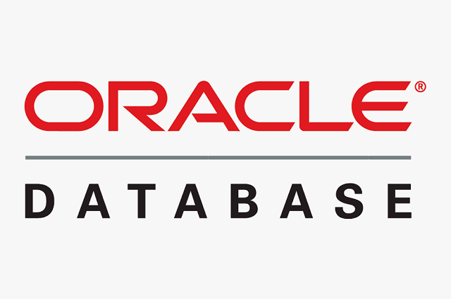
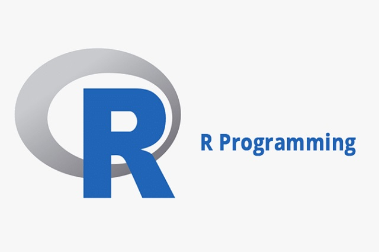

My Portfolio





I am a professional Database Designer, Database Developer and Data Analyst creating efficient and reliable databases for Web and other applications. Let us build a better tommorrow with technology.
Let's BeginI have experience working with large databases (billions of records per table) at Elevance Health, where I provided data analysis and learned the importance of scalable, flexible yet rigid, and efficient databases. I have built databases with full functionality with external integration.
To make use of data and project it outside of where it is stored, I have created and implemented various applications, such as discord bots, to effectively mirror and display important information in a different format and to aid in automating processes between the database and discord.
In my internship at Elevance Health I used a Teradata database to gather data to then provide analysis based off of that data. I have also created multiple different avenues like profiles and reports for my ODIN database to provide data in a way that allows for easy analysis to its clients.
Name Jonathan Anders
Location Indianapolis, Indiana
Phone (206) 225-4424
Email jonathananders99@gmail.com
GitHub www.github.com
Website www.company.com
I am a hard-working and reliable self-starter with a passion for computer science and a desire to make a meaningful difference. In addition to my studies at Purdue University (IUPUI), where I am pursuing a degree in Applied Computer Science, I have gained valuable experience through internships and freelance work in database design and analysis. I am also a TA for a computer science course and have previously worked as a sales associate and merchandise support at Nordstrom Rack, which is what spurred my interest in databases.
I am eager for new challenges and look forward to continuing to grow and develop my skills.
Follow my
LinkedIn
Visit my
Github
Download my
Resume